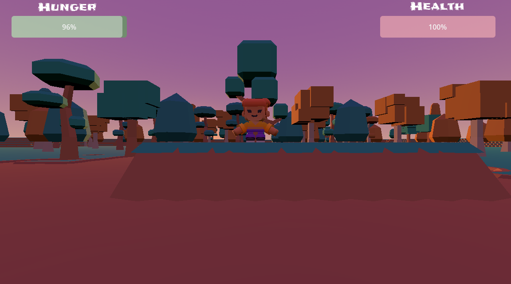
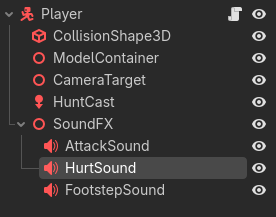
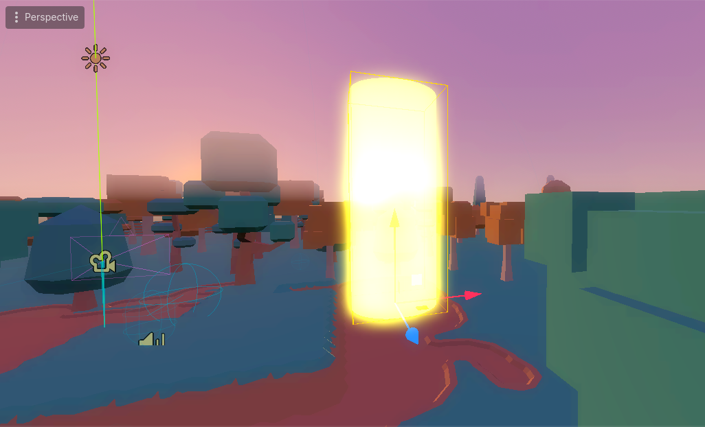
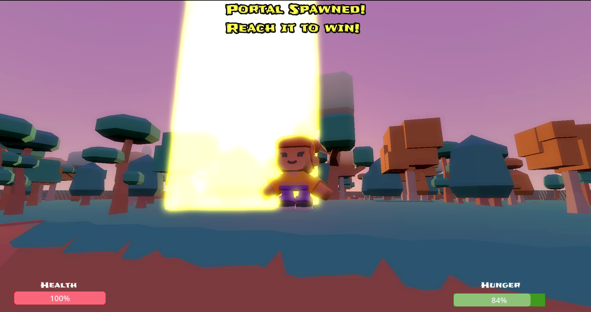
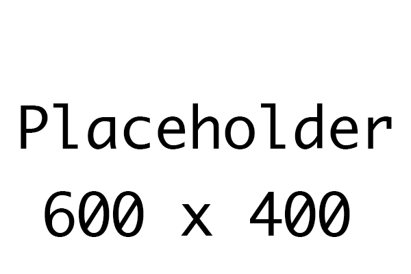

Video Tutorials
━━━━━━━━━━━━━━━━━━━━
Section 10: Game Loop & Polish
Complete your game with attack animations, creature animations, sound effects, an exit portal, and a polished player experience.
Triggering the Attack Animation
When the player hunts, they should play an attack animation. We'll update the hunt() function to play the animation during the hit.
Update the Hunt Function in player.gd
# Add this constant to your player.gd
const ATTACK_ANIMATION_DURATION = 0.4
var is_attacking = false
# Update your hunt function
func hunt():
# Play the attack animation
is_attacking = true
if model_anim_player and model_anim_player.has_animation("Attack"):
model_anim_player.play("Attack")
# Delay the hit detection until mid-animation
await get_tree().create_timer(0.15).timeout
# Check for hits
hunt_cast.force_shapecast_update()
if hunt_cast.is_colliding():
for i in range(hunt_cast.get_collision_count()):
var collider = hunt_cast.get_collider(i)
if collider.is_in_group("prey"):
spawn_smoke_puff(collider.global_position)
collider.hunted()
eat(20)
break
# Wait for the full animation before allowing a new attack and reset to normal animations
await get_tree().create_timer(ATTACK_ANIMATION_DURATION - 0.15).timeout
is_attacking = false
current_animation = ""
var current_direction = Vector3(velocity.x, 0, velocity.z)
update_animations(current_direction)Preventing Animation Override
Your update_animations() function might override the attack animation when the player moves. Add a check to skip animation updates during an attack:
func update_animations(direction):
# Skip animation updates while attacking
if is_attacking:
return
var target_animation = "idle"
# ... rest of update_animations ...await keyword pauses the function until the timer completes. This lets us run code before, during, and after an animation plays.
"attack" instead of "Attack", update the script to match.
Completing the Animation Loop
The player now has attack animations, but the creatures in the world need them too. In this step we'll add:
- A predator attack animation that plays when the predator hits the player
- A prey death animation that plays when the prey is hunted
Predator Attack Animation
Open predator.tscn and verify that the model has an animation named "Attack". If not, create a simple attack pose in the AnimationPlayer.
Update predator.gd to play the attack animation when the predator hits the player:
@onready var model_container = $ModelContainer
var model_anim_player = null
var is_attacking = false
func load_model():
for child in model_container.get_children():
child.queue_free()
var model_path = ""
match animal_type:
"wolf":
model_path = "res://assets/animals/wolf.glb"
# ... other cases ...
if ResourceLoader.exists(model_path):
var model = load(model_path).instantiate()
model_container.add_child(model)
# Get the animation player from the model and start it moving
model_anim_player = model.get_node_or_null("AnimationPlayer")
if model_anim_player and model_anim_player.has_animation("Walk"):
model_anim_player.play("Walk")
func attack_player():
if is_attacking:
return
is_attacking = true
# Play the attack animation
if model_anim_player and model_anim_player.has_animation("Attack"):
model_anim_player.play("Attack")
# Deal damage after a short wind-up
await get_tree().create_timer(0.2).timeout
if target and target.has_method("take_damage"):
target.take_damage(damage)
attack_timer = attack_cooldown
print("Predator attacked!")
# Wait for the animation to finish
await get_tree().create_timer(0.3).timeout
is_attacking = false
# Return to normal animation
if model_anim_player and model_anim_player.has_animation("Walk"):
model_anim_player.play("Walk")Prey Death Animation
Open prey.tscn. We want the prey to play a death animation before disappearing. This means we can't use queue_free() immediately.
Update prey.gd:
@onready var model_container = $ModelContainer
var model_anim_player = null
func load_model():
for child in model_container.get_children():
child.queue_free()
var model_path = ""
match animal_type:
"rabbit":
model_path = "res://assets/animals/rabbit.glb"
# ... other cases ...
if ResourceLoader.exists(model_path):
var model = load(model_path).instantiate()
model_container.add_child(model)
# Get the animation player from the model
model_anim_player = model.get_node_or_null("AnimationPlayer")
if model_anim_player and model_anim_player.has_animation("walk"):
model_anim_player.play("walk")
func hunted():
# Disable further interactions
set_physics_process(false)
$DetectionArea.set_deferred("monitoring", false)
# Play the death animation
if model_anim_player and model_anim_player.has_animation("Death"):
model_anim_player.play("Death")
# Wait for the animation to finish, then remove
await get_tree().create_timer(1.0).timeout
queue_free()await before queue_free() lets the death animation play before the prey disappears. Without this, the prey would vanish instantly.
"Attack", "attack", "Death", "death", "Die", etc.
Handle Missing Animations Gracefully
Not all models will have an attack or death animation. The has_animation() check handles this — if the animation doesn't exist, the code skips it and the creature disappears immediately as before.
Adding Audio to Your Game
Sound effects make games feel alive and responsive. We'll add three categories of sounds: player actions, environmental ambience, and creature sounds.
Player Sound Effects
- Open player.tscn
- Select the Player (CharacterBody3D) node
- Add an AudioStreamPlayer and rename it to "AttackSound"
- Add another and rename it to "HurtSound"
- Add another and rename it to "FootstepSound"
- Load appropriate sound files into each AudioStreamPlayer's Stream property
Update player.gd:
@onready var attack_sound = $AttackSound
@onready var hurt_sound = $HurtSound
@onready var footstep_sound = $FootstepSound
var footstep_timer = 0.0
func hunt():
is_attacking = true
if model_anim_player and model_anim_player.has_animation("Attack"):
model_anim_player.play("Attack")
attack_sound.play()
await get_tree().create_timer(0.15).timeout
# ... rest of hunt code ...
func take_damage(amount):
health -= amount
health = max(health, 0)
hurt_sound.play()
update_hud()
# ... rest of take_damage ...
# In _physics_process, add footstep sounds
func _physics_process(delta):
# ... existing movement code ...
# Play footstep sounds when walking on the ground
if velocity.length() > 0.5 and is_on_floor():
footstep_timer += delta
if footstep_timer > 0.4:
footstep_sound.play()
footstep_timer = 0.0
else:
footstep_timer = 0.0Environmental Ambience
Add ambient sound to the world for atmosphere:
- Open Environment.tscn
- Select the root node
- Add an AudioStreamPlayer and rename it to "AmbientSound"
- Load a looping ambient track (forest sounds, wind, etc.)
- Enable "Autoplay" in the Inspector
Creature Sound Effects
Give the prey and predator their own audio cues so the player can hear them before seeing them:
- Open prey.tscn
- Add an AudioStreamPlayer and rename it to "PreySound"
- Load a sound (a chirp, rustle, or squeak)
- In prey.gd, play the sound when the prey starts fleeing:
func _on_detection_area_body_entered(body): if body.name == "Player": is_fleeing = true $PreySound.play() print("Prey detected player!")
- Repeat the process for predator.tscn with a growl or howl
- Play the predator sound when it begins its chase
pitch_scale on the AudioStreamPlayer to make sounds slightly different each time, adding natural variety.

Building the Win Condition
Instead of surviving for time alone, players must survive until an exit portal appears, then reach it to win. Let's create the portal as a reusable scene first.
- Press Ctrl + N to create a new scene
- Add a Node3D as the root
- Rename it to "ExitPortal"
- Save the scene as "exit_portal.tscn"
Adding the Visual Pillar
- Add a MeshInstance3D as a child
- In the Inspector, set the Mesh to "New CylinderMesh"
- Set Top Radius to 1.0
- Set Bottom Radius to 1.0
- Set Height to 5.0
- Position the mesh at (0, 2.5, 0) so it stands on the ground
Creating the Glowing Material
- With MeshInstance3D selected, find Material Override in the Inspector
- Click the dropdown → select "New StandardMaterial3D"
- Click the material to edit it
- Set Albedo color to a color that will contrast with your environment
- Under Transparency, select "Alpha"
- Set Alpha to 0.5 so it appears translucent
- Enable "Emission" and set the emission color to the same color
- Set Emission Energy Multiplier to 3.0 for a glow effect
Adding the Detection Area
- Add an Area3D as a child of the root
- Rename it to "PortalArea"
- Add a CollisionShape3D as a child of PortalArea
- Set the Shape to "New CylinderShape3D"
- Set Radius to 1.5 and Height to 5.0
- Set the transform to position the portal to y 2.5 so it rests on the ground

Portal Script
Add this script to the ExitPortal root node:
extends Node3D
@onready var portal_area = $PortalArea
func _ready():
portal_area.body_entered.connect(_on_portal_area_body_entered)
# Animate the portal to make it appealing
var tween = create_tween().set_loops()
tween.tween_property($MeshInstance3D, "scale", Vector3(1.1, 1.0, 1.1), 1.0)
tween.tween_property($MeshInstance3D, "scale", Vector3(1.0, 1.0, 1.0), 1.0)
func _on_portal_area_body_entered(body):
if body.name == "Player":
print("Player entered the portal! You win!")
get_tree().change_scene_to_file("res://scenes/Win.tscn")set_loops() on a Tween makes the animation loop forever. Here we use it to make the portal pulse gently.
Managing the Portal Spawn
We'll use a script on the Environment scene to spawn the portal after the target survival time.
- Open Environment.tscn
- Select the root node
- Add a script named "environment.gd"
extends Node3D
@export var survival_time = 120.0 # 2 minutes
@export var portal_spawn_position = Vector3(0, 0, 0)
var time_survived = 0.0
var portal_spawned = false
var portal_scene = preload("res://exit_portal.tscn")
@onready var hud = $HUD
func _process(delta):
time_survived += delta
if time_survived >= survival_time and not portal_spawned:
spawn_portal()
func spawn_portal():
portal_spawned = true
var portal = portal_scene.instantiate()
portal.global_position = portal_spawn_position
add_child(portal)
# Show the alert on the HUD
if hud:
hud.show_portal_alert()
print("Portal spawned!")Positioning the Portal
- Select the Environment node
- In the Inspector, find the "Portal Spawn Position" export variable
- Set it to the location where you want the portal to appear (e.g.,
0, 0, 5)
Alerting the Player
When the portal appears, the player needs to know. We'll show a label and play a sound.
- Open Environment.tscn
- Select the HUD (CanvasLayer) node
- Add a Label as a child of HUD
- Rename it to "PortalAlert"
- Set its text to "A portal has appeared! Reach it to win!"
- Position it in the center of the screen
- Set its visible property to OFF in the Inspector
Adding the Alert Sound
- Add an AudioStreamPlayer as a child of the HUD
- Rename it to "PortalSound"
- Load a sound effect into its Stream property (e.g., a chime or bell)
HUD Alert Script
Add these functions to your HUD script:
@onready var portal_alert = $PortalAlert
@onready var portal_sound = $PortalSound
func show_portal_alert():
portal_alert.visible = true
portal_sound.play()
# Make the label pulse
var tween = create_tween().set_loops()
tween.tween_property(portal_alert, "modulate", Color(1, 1, 0, 1), 0.5)
tween.tween_property(portal_alert, "modulate", Color(1, 1, 1, 1), 0.5)visible property to show or hide UI elements. Setting it to OFF in the Inspector means it's hidden by default until we need it.

Building Win Screen
You've already learned how to create Control-based menu scenes and hook up buttons with signals in earlier units. Apply the same pattern here.
Win.tscn
- Create a new scene with a Control root
- Add a ColorRect for the background (Full Rect)
- Add a Label with text "You Escaped!"
- Add a Button with text "Play Again"
- Add a Button with text "Quit"
- Save as "Win.tscn"
Connecting the Buttons
- Select each button in the scene
- Go to the Node tab next to the Inspector
- Double-click the pressed() signal
- Connect to the root Control node
- In the auto-created function, write the scene transition
# Win.tscn script
extends Control
func _on_play_again_pressed():
get_tree().change_scene_to_file("res://scenes/CharacterSelect.tscn")
func _on_quit_pressed():
get_tree().change_scene_to_file("res://scenes/Start.tscn")pressed() signal to a function that calls change_scene_to_file().
Showing Survival Progress
Players should know how long they've survived and how long until the portal appears.
- Open Environment.tscn
- Select the HUD node
- Add a Label as a child
- Rename it to "TimerLabel"
- Position it in the top-right corner
Update the HUD script:
@onready var timer_label = $TimerLabel
var environment_node
func _ready():
environment_node = get_parent()
func _process(delta):
if environment_node:
var time = environment_node.time_survived
var target = environment_node.survival_time
var remaining = max(target - time, 0)
if not environment_node.portal_spawned:
timer_label.text = "Portal in: " + str(int(remaining)) + "s"
else:
timer_label.text = "Find the portal!"
The Full Flow
Start.tscn → (Press "Start Game")
↓
character_select.tscn → (Choose Character + Press "Start")
↓
Environment.tscn → (Survive until the portal spawns)
↓
Alert plays + Timer label changes + Portal appears
↓
Player reaches the portal → Win.tscn
— OR —
Player's health reaches 0 → GameOver.tscn
Test Checklist
- Character select loads first
- Choosing a character loads the correct model in the game
- The attack animation plays when the player hunts
- Predators play their attack animation when they hit the player
- Prey plays a death animation before disappearing
- Sound effects play for attacks, footsteps, and creature alerts
- The timer label counts down to portal spawn
- The portal appears at the target time with an alert sound
- The portal pulses and is visible
- Walking into the portal loads the Win scene
- Running out of health loads the Game Over scene
- Menu buttons transition correctly